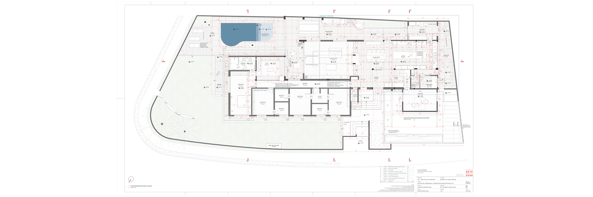
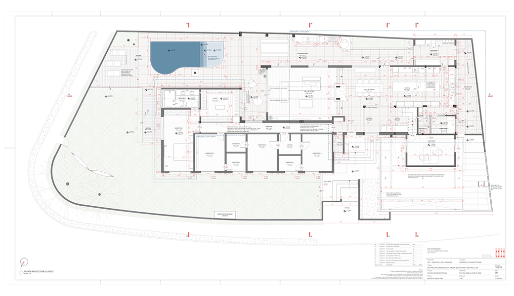
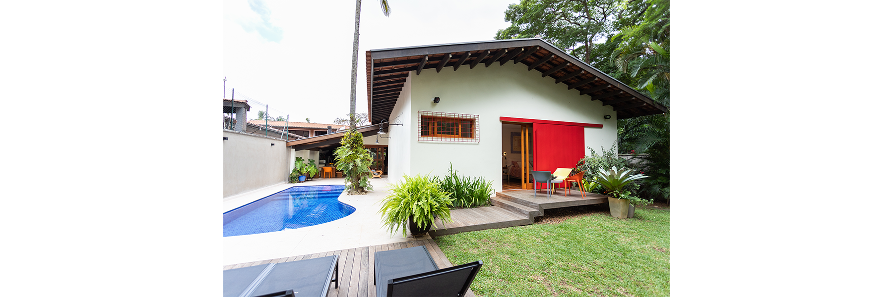
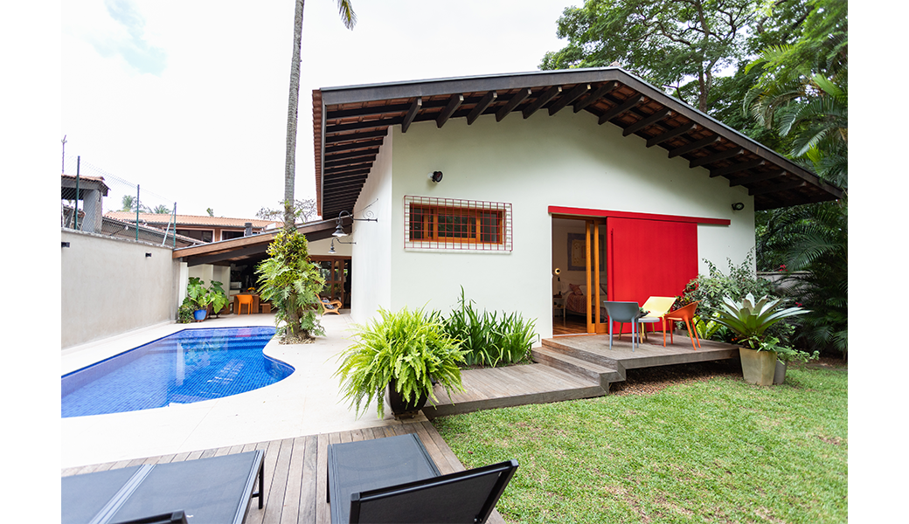
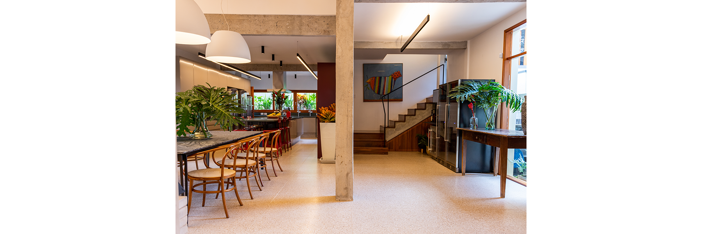
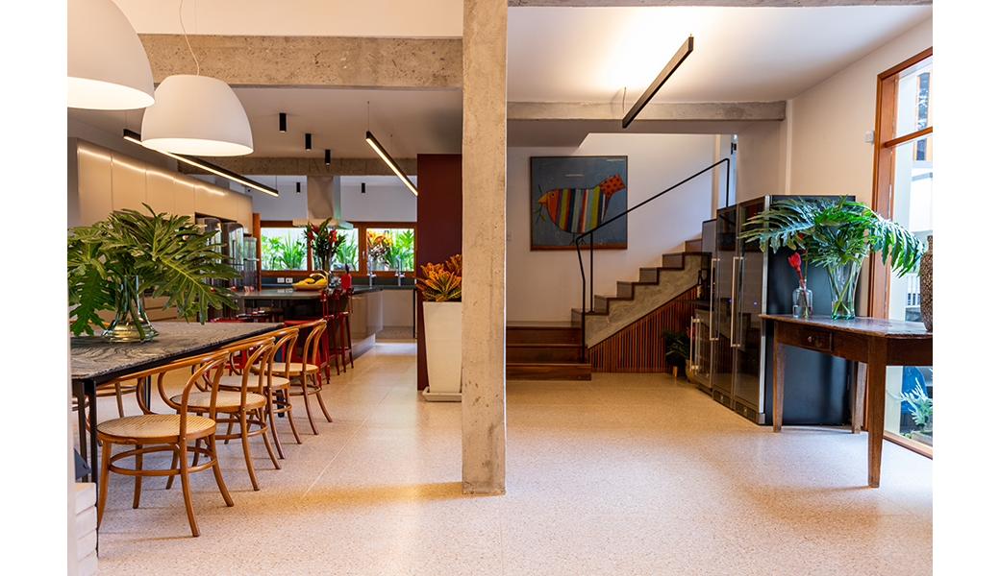
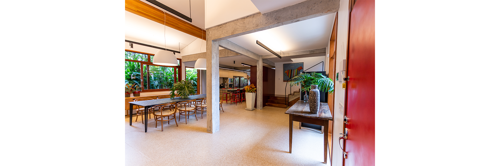
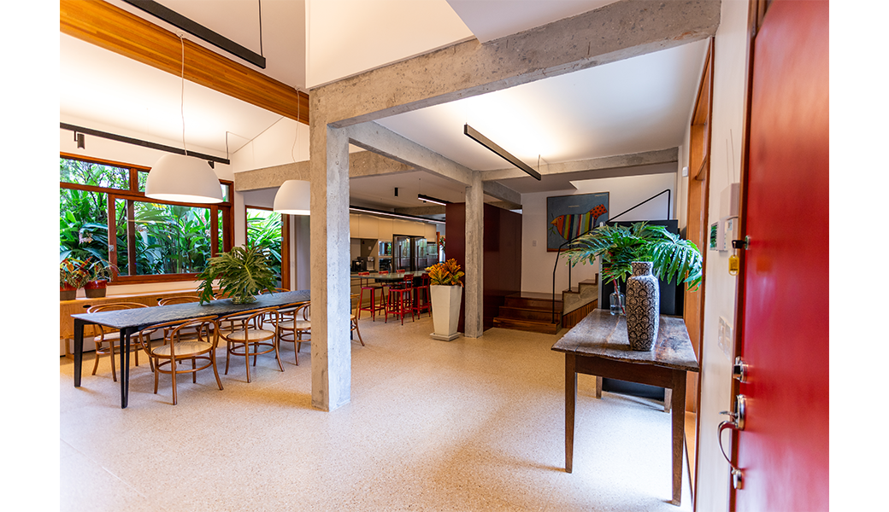
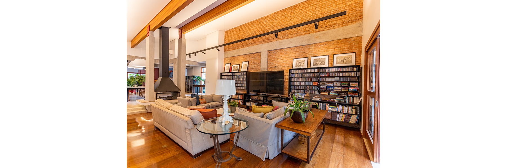
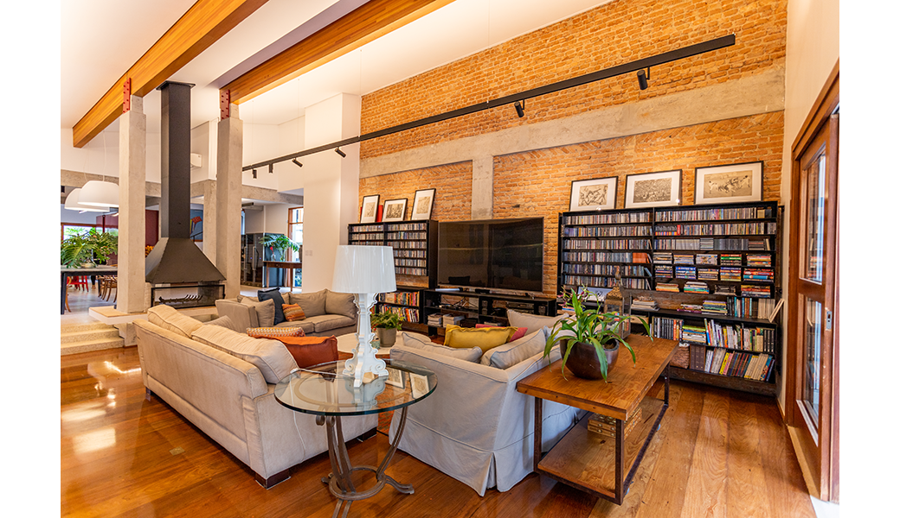
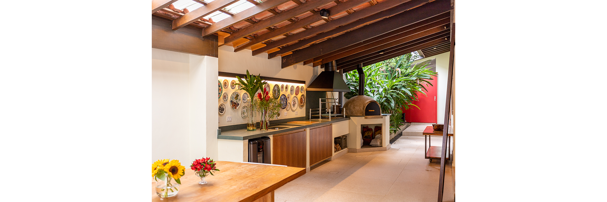
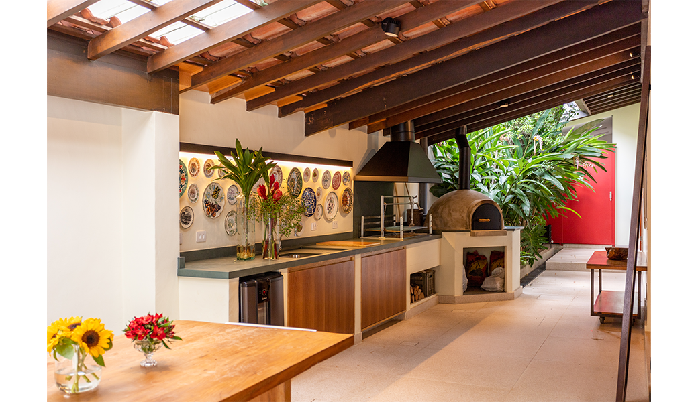
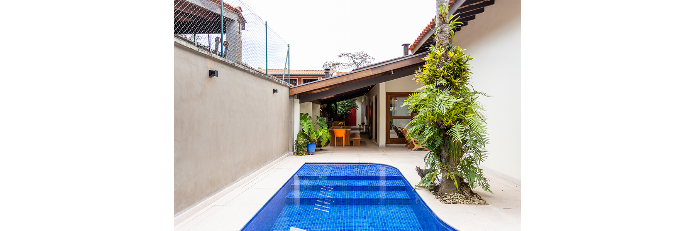
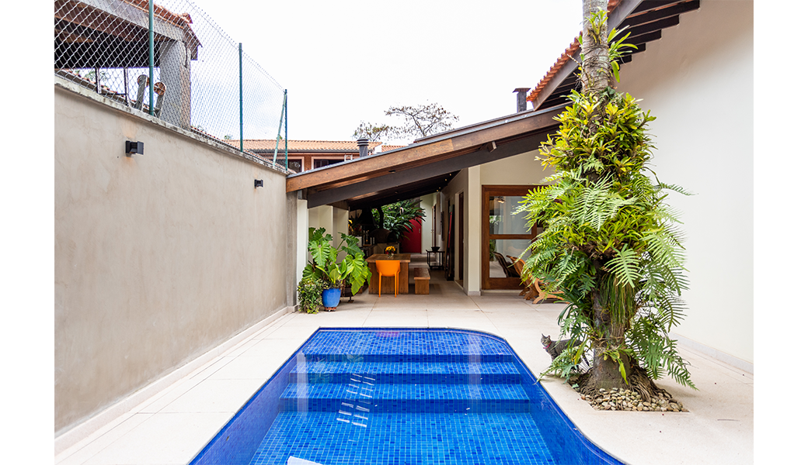
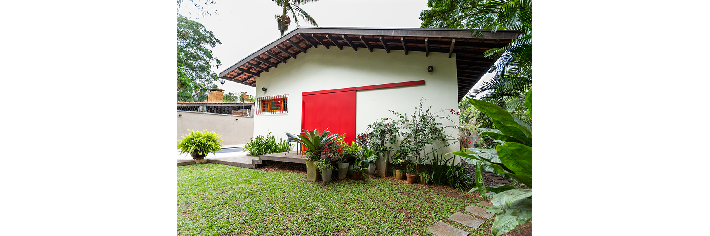
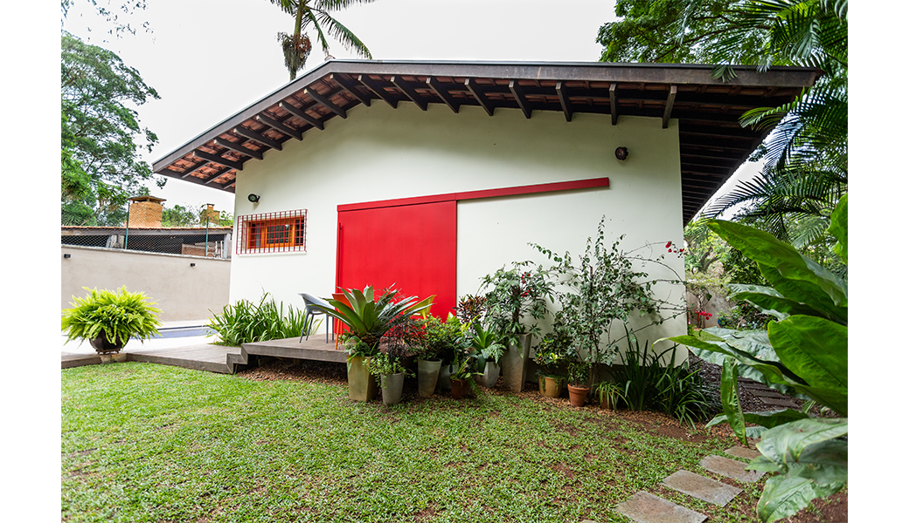
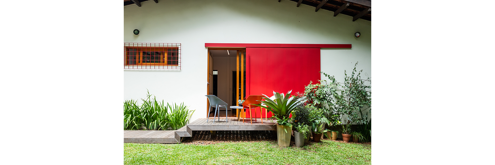
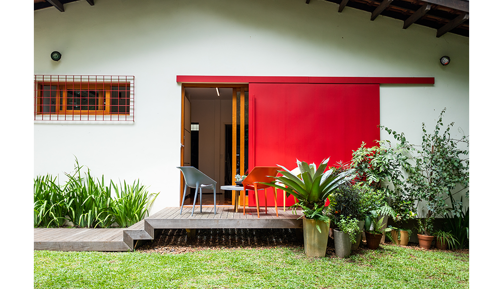
Since it was built over 60 years ago, this house has remained in the same family and has been occupied by different family configurations. In this new phase, the residents have decided to undergo a major transformation so that in the coming years the residence can better accommodate their needs, becoming a gathering place for the entire family. A farmhouse to escape to on weekends without leaving São Paulo, a modern and equipped house for everyday living.
Two areas of the house stood out as focal points for the goal of modernization. On one side, the kitchen, dining room, pantry, and staff room maintained a traditional layout, segregating each activity into a separate space and relying on a complex network of flows between the various environments. On the other side, at the opposite end of the house, the master suite was preceded by a spacious sitting room that was used as a library and study, leaving plenty of open space. At the same time, the room shared space with a cramped closet, leaving a small area for the bed and a small window facing the setback.
Considering these two fronts, the project aimed to reorganize the kitchen area by integrating all the spaces with the main hall of the house and expanding the suite to make it more comfortable. A principle that permeated the actions in all environments was the desire to open the house to its exterior spaces, make the most of natural light, and integrate the vegetation of the gardens with the interior space.